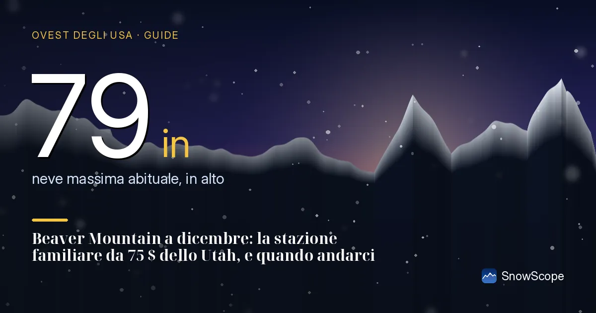

Beaver Mountain a dicembre: la stazione familiare da 75 $ dello Utah, e quando andarci
The Beav ha una rarità nello sci dello Utah: un solo prezzo adulti, 75 $, senza sovrapprezzo nei giorni di punta. Il problema è il calendario. Secondo la nostra storia della neve, inizio dicembre a Beaver Mountain è spesso scarso, e il consiglio onesto è venire nella seconda metà del mese.
Le previsioni neve in tempo reale per Beaver Mountain nell'app SnowScopeAltezza neve, allerte powder e mappa 3D, gratis.
Una stazione familiare sopra Logan Canyon
Beaver Mountain si trova in cima a Logan Canyon, oltre la città di Logan e prima di Garden City e Bear Lake. Secondo la nostra mappatura ha 6 impianti e circa 19 mi (31 km) di piste, tra circa 7.160 ft (2.181 m) e 8.760 ft (2.670 m). È a conduzione familiare, e si sente: un solo listino prezzi, nessun villaggio.

Dicembre settimana per settimana
È qui che Beaver Mountain richiede pazienza. A metà montagna, intorno a 7.960 ft (2.425 m), la quota di inverni con buona neve (una media settimanale di 20 in, 50 cm, o più) sale dal 43 % nella prima settimana di dicembre al 54 % nella seconda, 61 % nella terza e 76 % nella settimana di Natale.
In date concrete: un tipico 1 dicembre ha 16 in (40 cm) a metà montagna, il 15 dicembre 22 in (57 cm) e il 25 dicembre 28 in (71 cm). Alla base i numeri sono più bassi, 17 in (42 cm) in un tipico 15 dicembre, con solo il 33 % degli inverni sopra i 20 in in quella data. Un dicembre scarso (uno su dieci) lascia 10 in (25 cm) a metà montagna il giorno 15: lì si scia solo sulle piste battute.

Il prezzo, e il carnet da 10
Per il 2026-2027 lo skipass giornaliero adulti (12-69 anni) costa 75 $. Non c'è sovrapprezzo nei giorni di punta, cosa insolita in uno stato dove la tariffazione dinamica è la norma.
Se si vive nei dintorni, il carnet da 10 abbassa il costo per visita: 720 $ se acquistato all'ufficio di Logan, 740 $ online. Beaver Mountain fa parte anche dell'elenco Indy Pass: l'Indy Base Pass costa 419 $ e l'Indy+ Pass, senza date bloccate, 469 $, ciascuno con due giorni in ogni stazione partner.
Beaver Mountain o Brighton?
Brighton, in Big Cottonwood Canyon, parte con tariffe dinamiche da 72 $ per chi acquista in anticipo e ha molta più neve a dicembre secondo la nostra storia: 37 in (94 cm) a metà montagna in un tipico 15 dicembre, con l'89 % degli inverni sopra i 20 in.
La scelta quindi è una questione di tempismo. Per un prezzo fisso su cui contare, e un viaggio dopo metà dicembre, The Beav è l'opzione più rilassata. Per un viaggio a inizio dicembre, l'innevamento di base più alto di Brighton è il posto più sicuro dove spendere 72 $ o più.
La situazione sta peggiorando?
L'inizio stagione qui si è indebolito. Nei primi 15 inverni della nostra serie, a metà montagna c'erano 26 in (66 cm) in un tipico 15 dicembre e il 73 % degli inverni superava i 20 in. Negli ultimi 15 inverni erano 17 in (43 cm) e il 33 %. Lo scorso inverno c'erano 10 in (26 cm) in quella data. Pianificate per fine dicembre, e tenete d'occhio la mappa della neve prima di partire.
Consigli per sciatori
- Puntate alla settimana prima di Natale o più tardi: le probabilità di buona neve aumentano ogni settimana di dicembre.
- Chi scia spesso in zona dovrebbe guardare al carnet da 10 o all'Indy Pass piuttosto che ai biglietti singoli.
- Logan Canyon (US-89) è una strada di montagna: portate le catene o montate pneumatici da neve.
- Le piste a inizio stagione possono nascondere rocce: restate sulle piste battute finché la base non si consolida.
Riferimenti e crediti
- Beaver Mountain, tickets and passes 2026-2027 (official) www.skithebeav.com/tickets-and-passes/
- Indy Pass, shop 2026-27 (official) www.indyskipass.com/shop
- Brighton Resort, lift tickets 2026/27 (official) www.brightonresort.com/lift-tickets
- Snow King Mountain, winter day tickets (official store) store.snowkingmountain.com/en/catalogue/category/500-winter-lift-tickets/510-day-ticket_447/
- OpenSkiMap (mapped lifts and runs) openskimap.org/
- avalanche.org, US avalanche centers and forecasts avalanche.org/
Su questi numeri
Numeri della neve: storico neve SnowScope, 46 inverni passati (1980-81 - 2025-26) alle quote indicate (base, metà, vetta), una ricostruzione della neve passata per un'area corretta per la quota (basata su ERA5-Land; Snow_Hydro 1 km per il Marocco), non i bollettini della località. Neve attuale: la mappa SnowScope. Impianti, piste e quote: mappatura OpenSkiMap. Prezzi: le pagine ufficiali elencate qui sotto, lette il 13 novembre 2026; i prezzi dinamici cambiano con la data e la domanda.
Bollettini valanghe ufficiali: Utah Avalanche Center
Cita questo articolo
Per ricerca, didattica o stampa: numeri e grafici sono liberamente riutilizzabili con licenza CC BY 4.0 citando così.
SnowScope (2026), Beaver Mountain a dicembre: la stazione familiare da 75 $ dello Utah, e quando andarci, https://snowscope.app/blog/it/2026/11/beaver-mountain-utah-december-cheap-skiing.html, consultato il 2026-11-15
SnowScope (Atlas Labs). (2026, November 15). Beaver Mountain a dicembre: la stazione familiare da 75 $ dello Utah, e quando andarci. SnowScope snow reports. https://snowscope.app/blog/it/2026/11/beaver-mountain-utah-december-cheap-skiing.html
BibTeX
@misc{snowscope2026beavermountainutahdecemb,
author = {{SnowScope (Atlas Labs)}},
title = {Beaver Mountain a dicembre: la stazione familiare da 75 $ dello Utah, e quando andarci},
year = {2026},
month = nov,
howpublished = {\url{https://snowscope.app/blog/it/2026/11/beaver-mountain-utah-december-cheap-skiing.html}},
note = {Published 2026-11-15 09:34 UTC; accessed 2026-11-15}
}· CC BY 4.0 · Metodi, dati e strumenti →
Beaver Mountain: neve e temperatura per quota, quest'inverno vs lo scorso (strumenti) →
Segui Beaver Mountain
Gratis: un messaggio quando arriva la neve e il meteo ogni mattina.